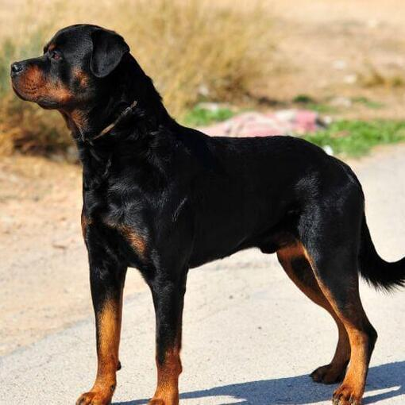
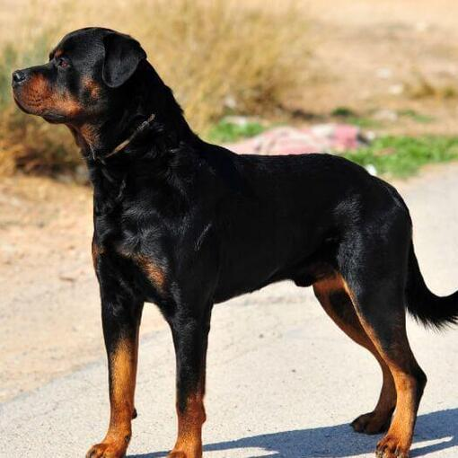

Karakter van de Rottweiler
De ideale Rottweiler is kalm, zelfverzekerd en moedig, nooit verlegen. Hij heeft een zelfverzekerde afstandelijkheid en sluit niet direct vriendschappen met mensen. In plaats daarvan neemt hij een afwachtende houding aan met nieuwe mensen of situaties. Met zijn gezin is hij aanhankelijk en volgt hij hen vaak door het hele huis. Hij heeft een inherent verlangen om zijn gezin en eigendommen te beschermen, maar mag nooit zonder reden agressief zijn tegenover mensen.
Je zult enkele verschillen tussen de seksen zien. Reutjes zijn stil maar waakzaam en beoordelen hun omgeving voortdurend op bedreigingen. Vrouwtjes zijn iets gemakkelijker te controleren en kunnen meer aanhankelijk zijn. Beide zijn zeer trainbaar, maar kunnen koppig zijn. Gemiddeld worden Rottweilers tussen de 55 en 69 cm groot. Het gewicht ligt gemiddeld tussen de 36 en 37 kg.
Het temperament wordt beïnvloed door een aantal factoren, waaronder erfelijkheid, training en socialisatie. Puppy's met een fijn karakter zijn nieuwsgierig en speels, bereid om mensen te benaderen en door hen vastgehouden te worden. Kies de puppy die midden op de weg ligt, niet degene die zijn nestgenoten in elkaar slaat of degene die zich in de hoek verstopt. Ontmoet altijd ten minste één van de ouders - meestal is de moeder degene die beschikbaar is - om ervoor te zorgen dat ze een fijn temperament hebben waar je je prettig bij voelt. Het ontmoeten van broers en zussen of andere familieleden van de ouders is ook nuttig om te evalueren hoe een puppy eruit zal zien als hij opgroeit.
Zoals elke hond hebben Rottweilers behoefte aan vroege socialisatie - blootstelling aan veel verschillende mensen, bezienswaardigheden, geluiden en ervaringen - als ze jong zijn. Socialisatie helpt ervoor te zorgen dat uw Rottweiler-puppy opgroeit tot een goed afgeronde hond. Hem inschrijven voor een puppy-kleuterklas is een goed begin. Door bezoekers regelmatig uit te nodigen en hem mee te nemen naar drukke parken, winkels waar honden zijn toegestaan, en tijdens een ontspannen wandeling om buren te ontmoeten, kan hij ook zijn sociale vaardigheden verbeteren.
Aandachtspunten
Rottweilers zijn grote, krachtige honden en hebben vanaf hun vroege jeugd uitgebreide socialisatie en training nodig.
Rottweilers stonden op de lijst van ""Hoog Risico honden"". Deze lijst bestaat niet meer, maar jouw gemeente kan wel specifieke regels hebben zoals verplicht aanlijnen of het dragen van een muilkorf.
Nog meer dan bij andere rassen doe je er als verantwoordelijke Rottweilerbezitter verstandig aan een intensief trainingstraject onder begeleiding te volgen.
Als ze met kinderen worden grootgebracht, kunnen goed opgevoede Rottweilers het goed met hen vinden. Ze moeten echter worden geleerd wat acceptabel gedrag bij kinderen is. Rotties hebben een natuurlijk instinct om te hoeden en kunnen kinderen ""stoten"". Vanwege hun grootte kan deze ""bult"" ervoor zorgen dat peuters vallen en zichzelf verwonden. Bovendien hebben sommige Rottweilers een sterke prooidrift en kunnen ze overdreven opgewonden raken als kinderen rennen en spelen. Houd altijd toezicht op uw Rottweiler als hij in de buurt van kinderen is.
Als u een volwassen Rottweiler heeft, introduceer dan voorzichtig nieuwe dieren, vooral honden. Rottweilers kunnen agressief zijn tegen vreemde honden, vooral honden van hetzelfde geslacht.
Rottweilers zijn intelligent en kunnen goed worden getraind, maar alleen als je stevig en consistent bent.
Rottweilers zullen je testen om te zien of je echt meent wat je zegt. Wees specifiek in wat je vraagt en laat geen mazen in de wet achter die ze kunnen misbruiken.
Rottweilers hebben dagelijks een paar wandelingen van 10 tot 20 minuten of speeltijd nodig.
Rottweilers hebben een dubbele vacht en verharen erg in de lente en de herfst.
De beste eigenaar voor de Rottweiler
Rottweilers vereisen stevige, consistente maar niet te harde opvoeding. Een scherp woord is vaak voldoende berisping, maar alleen als je je leiderschap duidelijk hebt vastgesteld. Zo niet, dan kan hij proberen je te pesten of te bluffen. Hun eigenaar moet mentaal stevig in zijn schoenen staan en in staat zijn om echt leiding te geven aan de hond. Daarnaast moet de nieuwe eigenaar aanvullende trainingen volgen bij een geschikte hondenschool. Dit is geen hond voor mensen die assertief zijn of geen tijd hebben om zich te wijden aan training en supervisie. Het respect van een Rottweiler verdienen, omvat het stellen van grenzen en het aanleren van consequenties voor ongepast gedrag, die beide tijd en geduld vergen.
Vachtverzorging, vachtkleur en verharen
De vacht van de Rottweiler beschermt de hond tegen kou en de zon. Het beschermt ook de huid van de hond. De gezondheid van de hond kan vaak door de vacht worden gepeild. Wanneer deze glanst, is de hond in topconditie. Wanneer de vacht wat doffer is, kan er iets aan de hand zijn. De haren van de Rottweiler zijn niet lang genoeg om in de klit te raken. Borstel de hond alleen gedurende de ruiperiode. Dit is zo’n twee keer per jaar. Wanneer je de hond te vaak borstelt kan deze terecht komen in een permanente ruiperiode. Dat wil je niet!
De rottweiler verhaart op de ruiperiodes na, niet ernstig veel. Deze hond komt in drie kleuren voor: zwart gemixt met mahonie, rust of tan.


 
